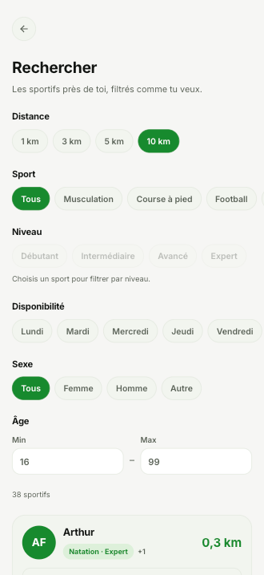
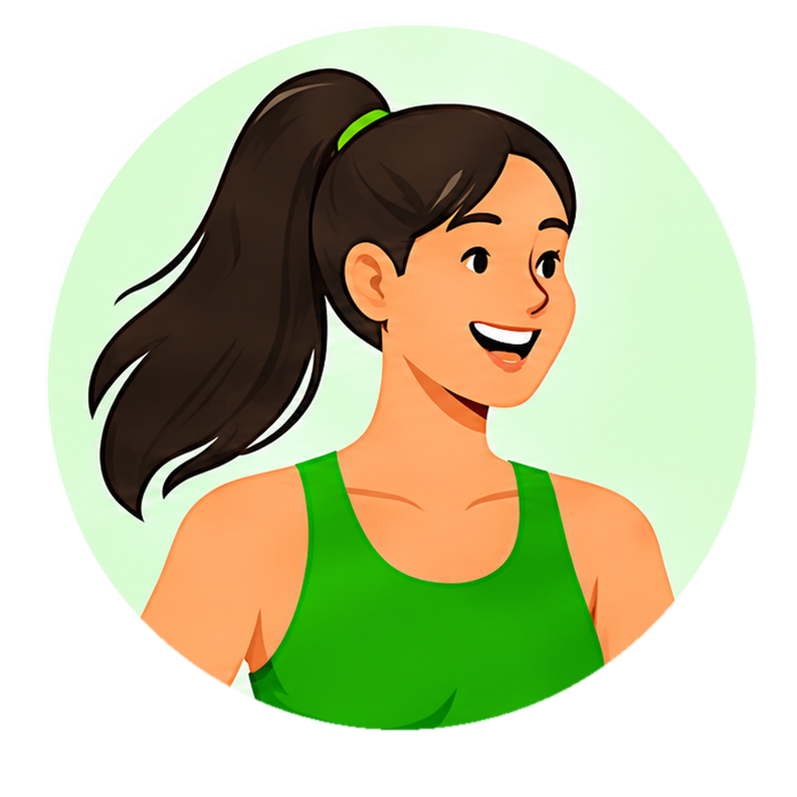
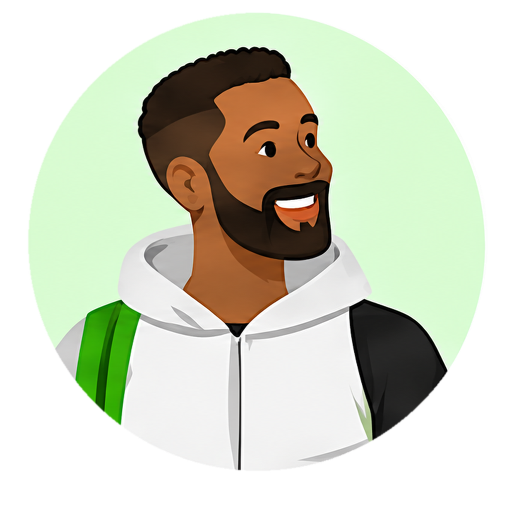
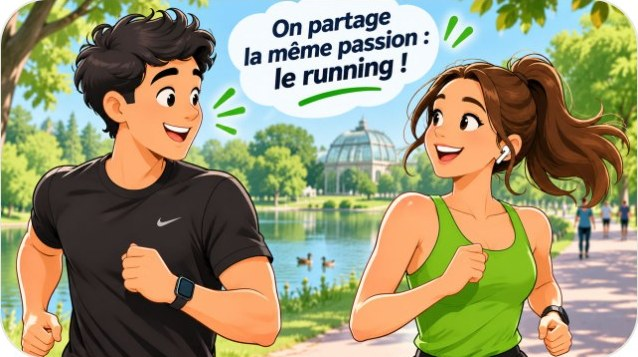
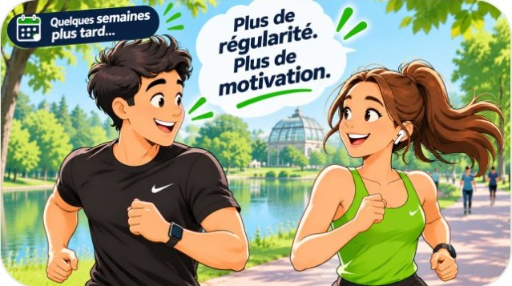
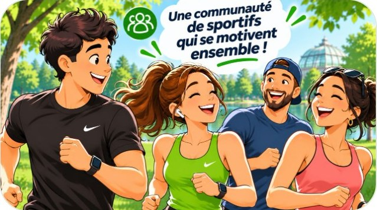
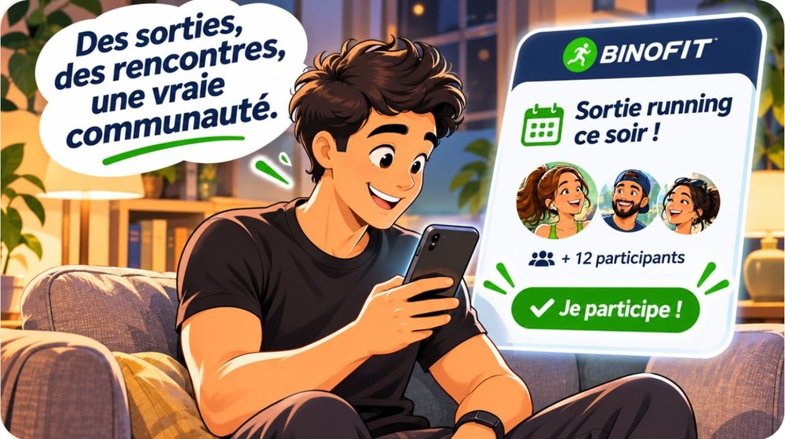

01
Le problème
Manquer de motivation quand on s'entraîne seul.
Avec BINOFIT
Un binôme qui t'attend : plus d'excuse pour annuler la séance.
Trouvez votre binôme, dépassez-vous !
BINOFIT met en relation des sportifs proches de chez eux pour pratiquer ensemble, ponctuellement : un footing ce soir, un match de tennis samedi, une séance de muscu à deux.
Pourquoi BINOFIT
S'entraîner seul, c'est souvent le premier pas vers l'abandon. BINOFIT règle les quatre obstacles qui reviennent le plus.
Un binôme qui t'attend : plus d'excuse pour annuler la séance.
Le niveau est affiché sur chaque profil : on s'entraîne au bon rythme.
Rayon de recherche, carte et créneaux communs : le bon binôme en quelques minutes.
La séance est confirmée à deux et apparaît dans « Mes activités ».
L'idée en une phrase
Un sportif trouve, près de chez lui, une personne du même sport, du même niveau et disponible au même moment, pour une séance ensemble, sans engagement.
Un rayon de recherche et une carte du quartier : le binôme est à quelques minutes.
Même sport, niveau proche, créneaux communs : on s'entraîne au bon rythme.
Une séance à la fois. Pas d'abonnement de club, pas d'engagement.
Comment ça marche
Deux parcours, un même objectif : s'entraîner à deux.
Sports pratiqués, niveau, zone de recherche et disponibilités : mon profil est prêt en quelques minutes.
Les sportifs dans mon rayon, en liste ou sur la carte, filtrés par sport et par niveau.
Un « Bonjour » pour briser la glace, puis on cale le lieu et l'heure dans la messagerie.
La séance apparaît dans « Mes activités ». Et si ça colle, on remet ça la semaine suivante.
Sports pratiqués, niveau, zone de recherche et disponibilités : c'est ce que les autres sportifs voient de toi.
Mon profil apparaît à ceux qui cherchent, dans leur rayon, avec mon sport et mon niveau.
Un message arrive dans ma messagerie. Je réponds quand je veux, sans engagement.
Date, heure et lieu confirmés à deux : la séance apparaît dans « Mes activités ».

Les sports
Les disciplines proposées dans l'application.
 Running
Running Vélo
Vélo Tennis
Tennis Yoga
Yoga Musculation
Musculation Natation
Natation Football
Football Basket
Basket Boxe
Boxe CrossFit
CrossFitPour qui ?
Des profils variés, une même passion !

« Je commence et j'ai besoin d'un coup de pouce ! »
Elle cherche quelqu'un qui démarre comme elle, pour ne pas se sentir jugée.
« Je cherche des partenaires pour progresser ensemble. »
Il veut garder le rythme et trouver quelqu'un de son niveau, disponible aux mêmes heures.

« Partager ma passion et rencontrer de nouvelles personnes. »
Il aime transmettre et voit chaque séance comme une occasion de rencontre.
Témoignages
Les retours de sportifs qui ont trouvé leur binôme avec BINOFIT.
« [Témoignage réel à insérer : ce que cette personne a vécu avec BINOFIT, en une ou deux phrases.] »
« [Témoignage réel à insérer : ce que cette personne a vécu avec BINOFIT, en une ou deux phrases.] »
« [Témoignage réel à insérer : ce que cette personne a vécu avec BINOFIT, en une ou deux phrases.] »
Cadre de confiance
Quatre principes simples encadrent chaque binôme, de la première recherche jusqu'après la séance.
Chaque sportif a un profil complet et vérifié avant d'apparaître dans les recherches.
Le niveau de chacun est visible : pas de mauvaise surprise le jour J.
On conseille de se retrouver dans un parc, un club ou un lieu fréquenté pour la première séance.
Chacun laisse un avis après l'entraînement, pour une communauté fiable et bienveillante.
Et après ?
Une séance, puis deux, puis une habitude. Le binôme devient une motivation, et parfois une petite communauté.

A On partage la même passion : le running.
B Et ce n'est que le début de l'aventure.

C Quelques semaines plus tard : plus de régularité, plus de motivation.

D Une communauté de sportifs qui se motivent ensemble.

Après le binôme, la prochaine étape : rejoindre des sorties de groupe près de chez soi et faire grandir la communauté.
Questions fréquentes
Une personne qui pratique le même sport que toi, à un niveau proche, disponible au même moment et près de chez toi. Vous vous retrouvez pour une séance ensemble, sans engagement.
Oui. Chaque sportif indique son niveau, de débutant à expert : tu peux chercher quelqu'un qui démarre comme toi.
Running, vélo, tennis, yoga, musculation, natation, football, basket, boxe et CrossFit.
Vous échangez dans la messagerie, puis l'un propose une séance (date, heure, lieu) que l'autre confirme. Pour une première fois, on conseille un lieu public.
Non. C'est une séance à la fois. Si ça colle, vous remettez ça ; sinon, tu trouves un autre binôme.
Pour créer ton profil, tu indiques tes sports, ton niveau, ta zone de recherche et tes disponibilités.
Contact
Sportif, club ou association de quartier : écris-nous, l'équipe BINOFIT te répond.
Crée ton profil en quelques minutes et trouve ton premier binôme près de chez toi.
Ouvrir l'application